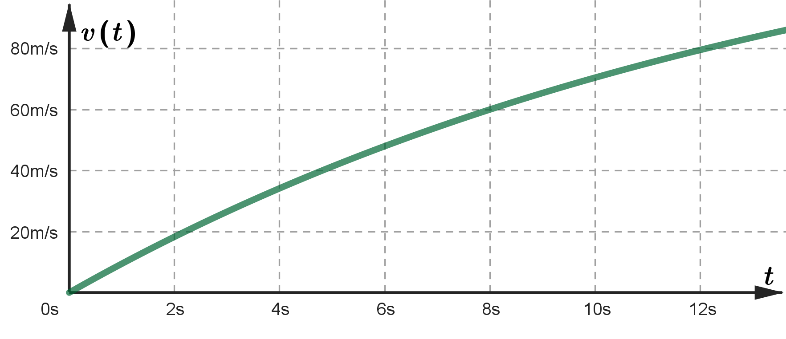
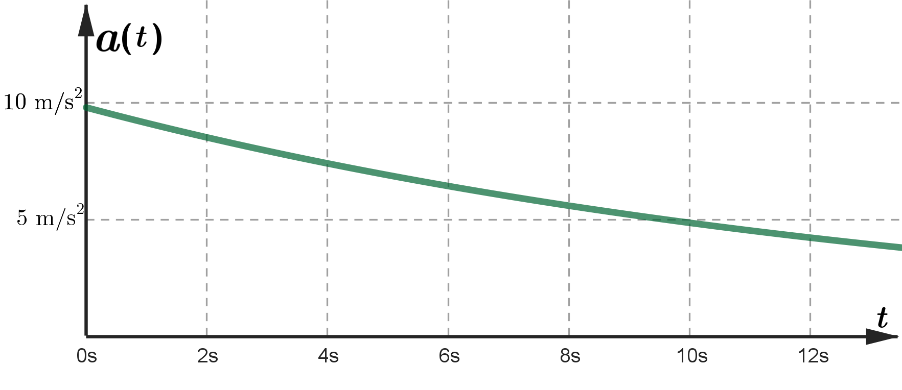
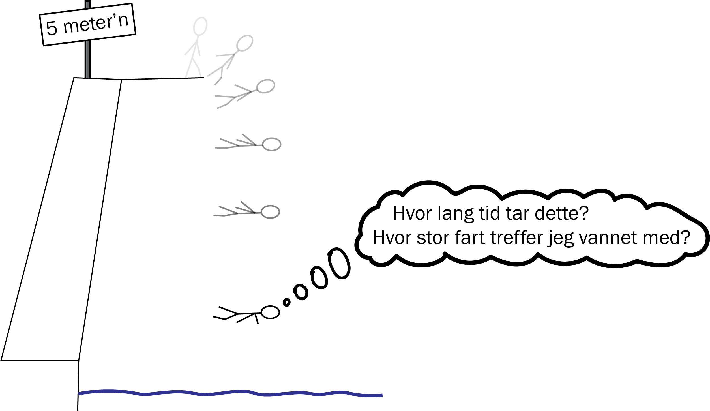
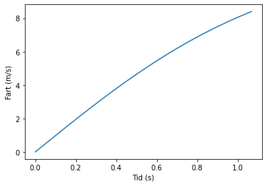

Bevegelsesligningene
Du skal ha kompetanse om
- sammenhengen mellom strekning, fart og akselerasjon
- bevegelsesligningene for rettlinjet bevegelse med konstant akselerasjon
- programmering for bevegelse med ikke-konstant akselerasjon
Definisjon av fart og akselerasjon
Fart \(v\) er endring av strekning \(s\),
\[ v = \frac{\Delta s}{\Delta t} \;\;\xrightarrow[]{\text{når } \Delta t \rightarrow 0}\;\; v = s'(t) \]Akselerasjon \(a\) er endring av fart \(v\),
\[ a = \frac{\Delta v}{\Delta t} \;\;\xrightarrow[]{\text{når } \Delta t \rightarrow 0}\;\; a = v'(t) \]Eksempel
En bil starter fra ro. I løpet av 10 sekunder har den kjørt 250 meter og fått farten 75 m/s.

Bestem gjennomsnittsfarten og gjennomsnittsakselerasjonen til bilen.
Eksempel
Strekningen bilen i eksempelet over har tilbakelagt etter \(t\) sekunder er
\[ s(t) = 0\text{,}0125t^4 + 1\text{,}25t^2 \;\;,\;\; 0 \leq t \leq 10 \]Bestem farten og akselerasjonen til bilen etter 0 s og 10 s.
Fra definisjonene av fart og akselerasjon kan man forklare at
- arealet under en fartsgraf gir strekning
- arealet under en akselerasjonsgraf gir fartsendring
Eksempel
Grafen viser sammenhengen mellom tid og fart til en fallskjermhopper (før han løser ut fallskjermen).

Bestem akselerasjonen etter 10 sekunder, og bestem hvor langt han faller de første 10 sekundene.
Eksempel
Grafen viser sammenhengen mellom tid og akselerasjon til en fallskjermhopper (før han løser ut fallskjermen).

Bestem farten etter 10 sekunder.
Bevegelsesligningene for konstant akselerasjon
Ved hjelp av derivasjon/antiderivasjon kan vi vise at bevegelseslikningene for konstant akselerasjon er
\[ s = v_0 \cdot t + \frac{1}{2}at^2 \;\;\; \text{ og } \;\;\; v = v_0 + a \cdot t \]Ved hjelp av algebra kan likningene over skrives om til
\[ v^2 - v_0^2 = 2as \;\;\; \text{ og } \;\;\; s = \frac{v_0 + v}{2} \cdot t \]Hvis vi kan se bort fra luftmotstand, er akselerasjonen til noe som faller fritt tyngdeakselerasjonen, som er lik \(9\text{,}81 \text{ m/s}^2\). Når vi ikke har kalkulator, bruker vi tilnærmingsverdien \(10 \text{ m/s}^2\).
Tyngdeakselerasjonen avhenger av massen til jorda, og avstanden til sentrum av jorda. Jorda er ikke en perfekt kule med homogen massefordeling, så egentlig er ikke tyngdeakselerasjonen \(9\text{,}81 \text{ m/s}^2\)overalt på jordoverflaten. Likevel bruker vi \(9\text{,}81 \text{ m/s}^2\) som en standard, eller \(10 \text{ m/s}^2\) når vi ikke har kalkulator.
Eksempel

Startfarten er null, så den første bevegelsesligningen gir
\[ \begin{aligned} s &= v_0 \cdot t + \frac{1}{2}at^2 \\ 5 &= 0 \cdot t + \frac{1}{2} \cdot 10 \cdot t^2 \\ t &= \sqrt{\frac{2 \cdot 5}{10}} = 1\text{,}0 \text{ sekunder} \end{aligned} \]Farten kan vi finne ved hjelp av den andre bevegelsesligningen:
\[ \begin{aligned} v &= v_0 + a \cdot t \\ v &= 0 + 10 \cdot 1 = 10 \text{ m/s} \end{aligned} \]Ikke-konstant akselerasjon
Når akselerasjonen ikke er konstant bruker vi programmering; Vi deler opp bevegelsen i små tidsintervall \(\Delta t\), og bruker at farten \(v\) og akselerasjonen \(a\) tilnærmet (nesten) er konstant i løpet av dette tidsintervallet, slik at vi kan bruke
\[ \Delta v = a \cdot \Delta t \;\;\;\; \text{ og } \;\;\;\; \Delta s = v \cdot \Delta t \]Når vi skal ta høyde for luftmotstand, er akselerasjonen i fritt fall
\[ a = g \pm C \cdot v^2 \;\;\text{eller}\;\; a = g - C \cdot v \]hvor \(C\) er en parameter som avhenger av tyngden og formen til det som faller. Hvilket av de to uttrykkene over vi skal bruke, avhenger av formen og farten til det som faller.
Programmet nedenfor beregner tiden det tar å falle fra 5-meteren i svømmehallen når vi tar hensyn til luftmotstand:
s, v, t = 0, 0, 0 # Startverdier for strekning, fart og tid
dt = 0.001
while s < 5: # Så lenge strekningen er under 5 meter
a = 9.81 - 0.07*v**2 # Uttrykket for akselerasjon
v = v + a*dt
s = s + v*dt
t = t + dt
print(t, v)Her har vi brukt \(C \approx 0,07\), som stemmer ganske bra for en voksen person som dødser eller tar svalestup.
Programkoden skriver ut at tiden blir 1,1 sekunder og at farten blir 8,5 m/s. Med konstant akselerasjon 9,81 m/s\(^2\) blir resultatet 1,0 sekunder og 9,9 m/s, så resultatet er ganske realistisk.
from pylab import* # Importerer muligheten til å lage graf
s, v, t = 0, 0, 0 # Startverdier for strekning, fart og tid
x, y = [ ], [ ] # Lister for å lage graf
dt = 0.001
while s < 5: # Så lenge strekningen er under 5 meter
a = 9.81 - 0.07*v**2 # Uttrykket for akselerasjon
v = v + a*dt
s = s + v*dt
t = t + dt
x.append(t) # Legger inn t-verdien i x-lista
y.append(v) # Legger inn v-verdien i y-lista
xlabel('Tid (s)'); ylabel('Fart (m/s)')
plot(x, y)
I programmet lager vi lister, x, y = [], [].
Listene blir utvidet med nye verdier (x.append(t) og y.append(v)).
plot(x, y) lager en graf med alle verdiene fra x- og y-lista.